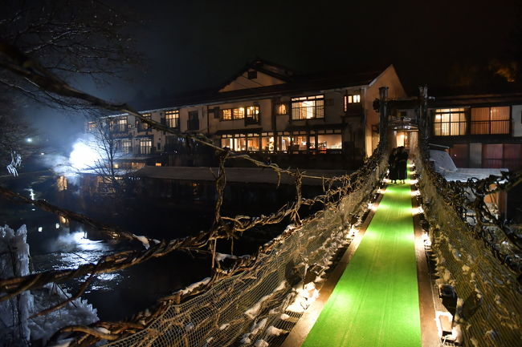
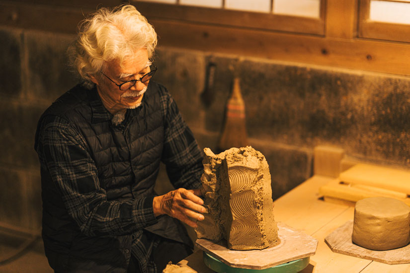
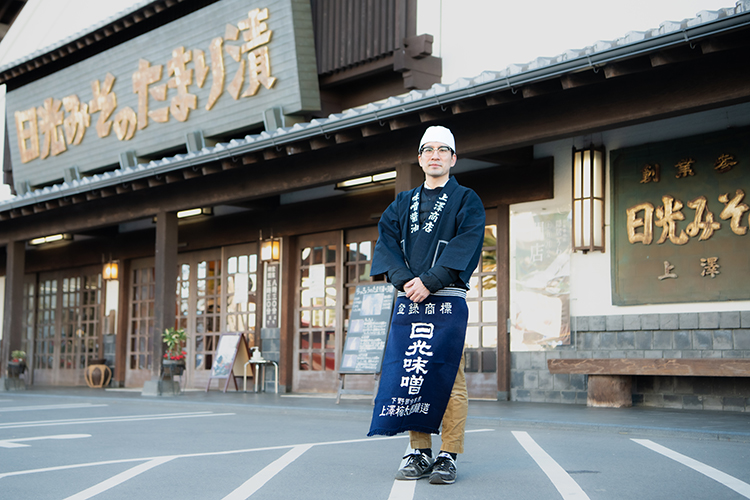
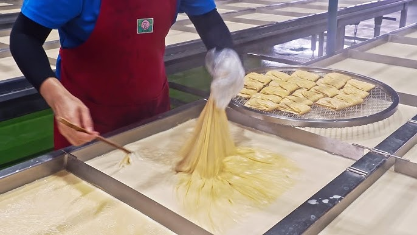
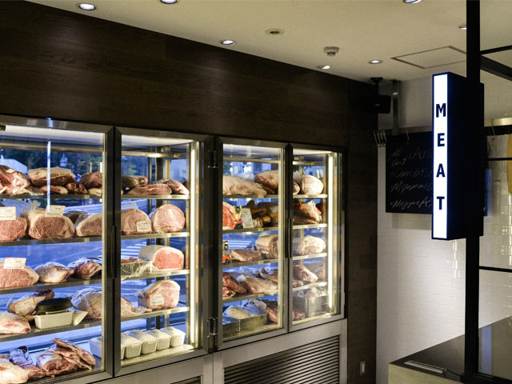
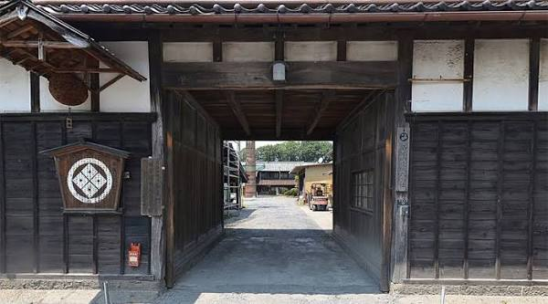
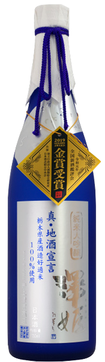
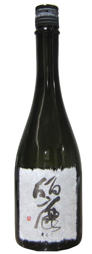
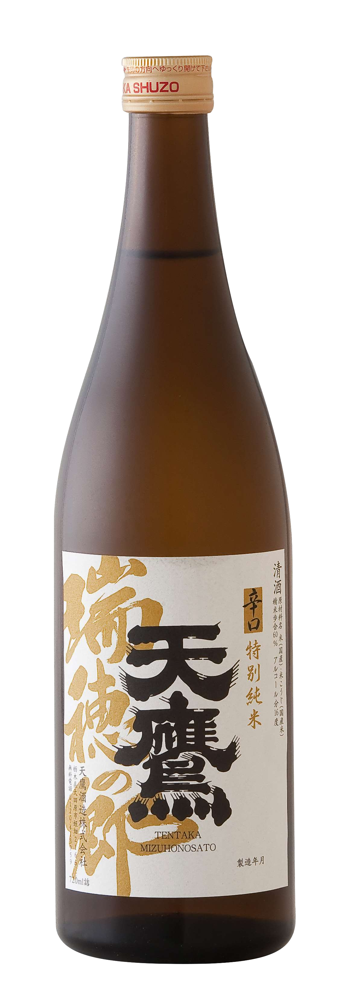
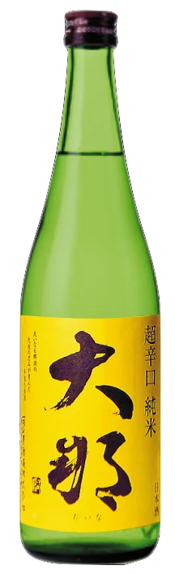

1 · Prefecture dropdown
Unchanged from v1. Grouped by region with live catalog counts, so it is obvious where there is something to see.
Japan
Japan, the sake, and where we drink it.
Browse by prefecture
All 47, grouped by region
Home
Japan
Explore
You
2 · Tochigi — revised
Scroll it. Season strip, hero, events, eat & drink, shop, food, artisans, visit, then the two catalogs and the trip builder.
Kantō
Tochigi
栃木県 · とちぎ
28Breweries
24Sake
31Places
6Events
Article

hero-yunishigawa-kazurabashi.jpgHot water, warm sake
A hot spring village two hours past Nikko, where you can taste sake in the shop before you buy it and warm the bottle in your own bath. One street, one liquor shop, and more open-air baths than houses.
i
Getting there. Two trains and a bus, and why it takes that long.
ii
The village. A thousand people, more baths than houses, and one street to walk down.
iii
Honke Bankyū. Founded 1666. You cross a vine bridge to get to dinner. Every room faces the river.
iv
Yuzawaya Saketen. Ten seats in a liquor shop. Taste before you buy, and what to get.
v
Warming sake in the bath. Plus how not to annoy anyone else in the bath.
vi
Three more baths. Where to go next.
Warm it in the bath
Stand the sealed bottle in the tub while you soak. Private
bath only — never a shared one. The water runs 42–45°, so the sake lands near 40°.
You don't need a thermometer. Cold sake smells of
almost nothing. As it warms, the rice comes up out of the bottle. When you can smell it without
leaning in, it's ready. Sharp or spirity means it went too far.
30°
Hinatakan
40°
Nurukan
45°
Jōkan
50°
Atsukan
Kimoto and yamahai take heat best. Sōhomare is the one to practise on, and Yuzawaya
has it.
Events
What's on
Feb1 week
Shimotsukare season
MarTokyo
Shimotsuke Tōji new sake release
Apr& Nov
Mashiko Pottery Fair
SepAnnual
Sasara Light Cube — Tochigi Sake Summit
Restaurants & bars
Where we eat and drink
What it costs is on every row.
 place-ippachi.jpg
place-ippachi.jpgKappō · Utsunomiya
Ippachi (一八)
¥2,000–3,000
Tasting room
Shimadaya Saketen, Miya-Mirai
From ¥1,200
 place-zen-nikko.jpg
place-zen-nikko.jpgYuba kappō
Zen (全), Nikko
Lunch ¥2,000–3,000
 place-kumao-ujiie.jpg
place-kumao-ujiie.jpgIzakaya
Kumaō, Ujiie
 place-mushu-ogawa.jpg
place-mushu-ogawa.jpgBar
Mushu OGAWA — Pipe no Kemuri
¥3,000–4,000
Sake shops
Where we buy sake
Bottle shops across the prefecture. Most of them will post to you.
Utsunomiya
Shimadaya, Miya-Mirai
Taste before you buy. All 28 breweries in the prefecture, three glasses from ¥1,200, a minute from the station.
 shop-yuzawaya-saketen.jpg
shop-yuzawaya-saketen.jpgYunishigawa
Yuzawaya Saketen
A liquor shop with about ten seats, so you can try things before you commit. Some bottles are made for this village and sold nowhere else.
 shop-hoshidaya-saketen.jpg
shop-hoshidaya-saketen.jpgŌtawara
Hoshidaya Saketen
Open since 1921, out in the countryside at Kurobane. More Kyokkō than anywhere else, plus Daina, Tentaka and Senkin.
 shop-mashidaya.jpg
shop-mashidaya.jpgMibu
Mashidaya
They write a proper tasting note for everything they stock, and they stock from all over Japan. You can order online.
Artisans
Where we shop
Potters, picklers and butchers, and the shops that sell their work. You can buy from all of them.

artisan-matsuzaki-ken.jpgCeramic artist · Mashiko
Matsuzaki Ken
Buy at Zengo, or at the kiln
 shop-toko-mashiko.jpg
shop-toko-mashiko.jpg
Ceramics shop · Mashiko
Tōkō
Guinomi ¥3,000–12,000
 shop-zengo-yamani.jpg
shop-zengo-yamani.jpg
Ceramics shop · Mashiko
Zengo, at Yamani Ōtsuka

artisan-uwasawa-umetaro.jpgPickle maker · Nikko
Uwasawa Umetarō Shōten
Rakkyō ¥600

artisan-ebiya-chozo.jpgYuba maker · Nikko
Ebiya Chōzō

artisan-waki-seinikuten.jpgButcher · Ōtawara
Waki Seinikuten
Food
Local Tochigi foods
Nikko
Yuba
The skin off soy milk, rolled thicker than Kyoto's. Ebiya Chōzō has made it by hand since 1872.
February only
Shimotsukare
Salmon head, sake lees, roasted beans. One week in February. Half the prefecture won't touch it.
Tochigi City
Miso dengaku
Grilled tofu with miso, at a shop making miso since 1781. They brew beer now too.
Ōtawara
Tochigi wagyu "Takumi"
The top grade of Tochigi beef, and the butcher who buys whole carcasses of it.
Sano
Aodake ramen
Noodles pressed by hand under a bamboo pole. Almost nobody still does it any more.
Nakagawa · summer
Ayu
River fish, salted and grilled whole over charcoal. Caught in the Nakagawa from June.
Breweries
Breweries you can visit
Six breweries you can book or walk into.
Shimazaki — the tunnel
¥200 · weekends

brewery-nishibori.jpgNishibori — brewery and distillery
¥1,500 / ¥3,000
 brewery-tsuji-zenbei.jpg
brewery-tsuji-zenbei.jpg
Tsuji Zenbei — the oldest
All breweries
Breweries
Inoue Seikichi (Sawahime)
11 sake listed
Iinuma Meijō (Sugata)
6 sake listed
Kikunosato (Daina)
3 sake listed
Senkin
1 sake listed
Shimazaki (Azumarikishi)
1 sake listed
Visit
Sohomare
1 sake listed
Watanabe (Kyokkō)
Brewery profile
Tonoike
No sake listed yet
Matsui
No sake listed yet
All sake
Sake from Tochigi

sake-sawahime-jd-shin-jizake-sengen.png94%MATCH
Sawahime Junmai Daiginjo Shin Jizake Sengen
Inoue Seikichi · Utsunomiya
Sake profile
Fragrant

sake-senkin-jd-urara.png91%MATCH
Senkin Urara Junmai Daiginjo
Senkin · Sakura
Sake profile
Fragrant

sake-tentaka-tokubetsu-junmai-mizuhonosato.png88%MATCH
Tentaka Tokubetsu Junmai Mizuho no Sato
Tentaka · Ōtawara
Sake profile
Dry

sake-daina-junmai-chokarakuchi.png85%MATCH
Daina Junmai Chokarakuchi
Kikunosato · Ōtawara
Sake profile
Dry
See all 24 →
Build a Tochigi trip
Pick kura and places, keep them in one itinerary
Start →
Home
Japan
Explore
You